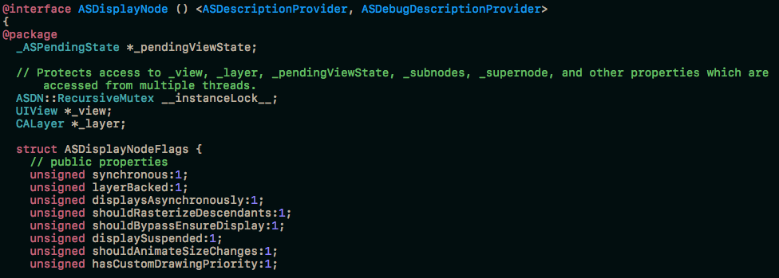

Turtle
虽然慢，但是我有在爬呀
最近在看ASDK（AsyncDisplayKit）源码的时候看到了ASDK写了一个ASDisplayNode的extension，里面声明了一堆ivar，然后又在各种ivar之前加入了@package、@protected、@public的字段，出于好奇它的作用，我先去查了一下这四种关键字的意义，如下：
当extension声明在.h或者声明在.m中，里面ivar的作用域是不同的。
而如果extension是声明在.m文件里的，无论如何在这个.m以外，都无法获取到这个extension里变量。（这也是通常的写法）
但是在ASDK里，会将extension声明在一个单独的头文件里，然后写成如下一般：

这里刷新了我的三观= =。如果将extension暴露给外部的话，那这些关键字就有效果了。extension里的变量默认为私有，如果用上面的四种关键字来更改作用域的话，就可以在外部被访问到了（前提是你包含了这个头文件）。